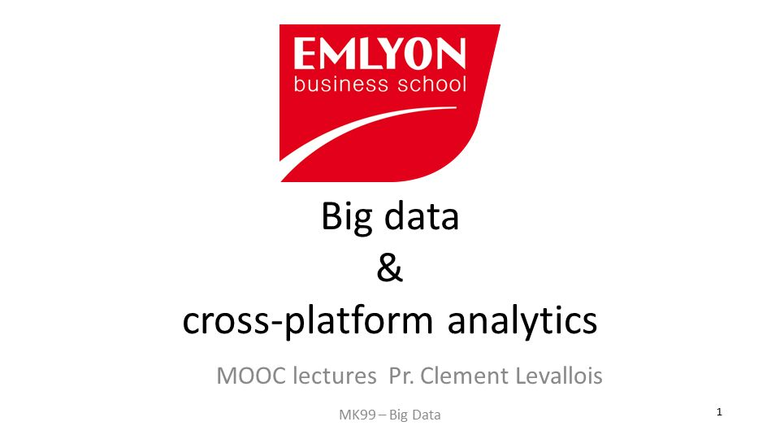
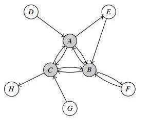

Clement Levallois@seinecle
Looking for the Gephi tutorials? Click here!
|  | Big data for business: A course created at EMLYON Business School 1. Introduction: What is "data"? / What is "big data"? / What is Hadoop? / What is the cloud? 2. Data integration: The business stakes of data integration / What are APIs and why should business care 3. CRM and segmentation: The new role of CRM in a data-driven environment / Segmentation in marketing: quantitative techniques 4. Text mining and network analysis for business: A primer on text mining for business / A primer on network analysis for business 5. Data-driven value creation: 7 building blocks to create value from data / Six business models based on data 6. Personalization and localization: Data and personalization / Data and localization 7. Data visualization: Data visualization for business 8. Curating data for business: Data protection in a business context / Open data for business 9. Data science for business: What is a data scientist? / A short note on machine learning explained to business |
|  | Presentations on network visualization download slides. Topic: Issues in the representation of large, dynamic, spatialized networks download slides. Topic: Network visualizations: why, and how to? download slides. Booklet: what is dataviz? |
| NESSHI and GEPHI: Sociology of science as breeding ground for tool building in the digital humanities Check the event
Slides of my presentation on NESSHI (http://www.nesshi.eu), a European project in sociology of science started in 2011, and on the tools for data visualization created in the course of this project.
Most of these tools were built on top of Gephi, an open-source network visualization software. I will present in detail how Gephi has evolved to become a platform of choice for key steps of data management (not only visualization), likely to be useful in a wide range of scientific domains. |
|
| Let's Go Digital! A course at Erasmus University Rotterdam, 2013 visit the website
This course is offered to Bachelor students from all departments at Erasmus University. An initiative of the Erasmus Studio, it is coordinated by , with http://www.martijnkleppe.nl/ and me as co-teachers of three separate modules in it. Franciska de Jong, Renske Jongbloed and Kees Mandemakers also participate in the lectures.
The ambition of this course is to provide the students with an in-depth coverage of what "digital scholarship" is today, conceptually and in practice. Stef Scagliola covers the broad panorama of digital scholarship (definitions, concepts, and focus on the digital humanities). Martijn Kleppe covers "digital visual culture", which is the topic of his PhD. And I cover the teaching of tools and techniques for the practice of digital scholarship. . Visit the website to have a broader view of this course! |
|
| Theses by students visit the page
Many Bachelor or Master's theses often remain dusting on shelves after their completion, and that's too bad. With the students's agreement, this page shares some excellent theses for which I acted as a coach or a co-reader.
|